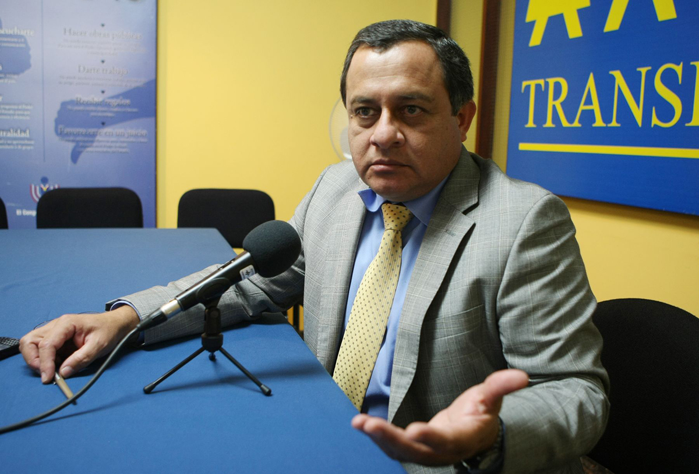
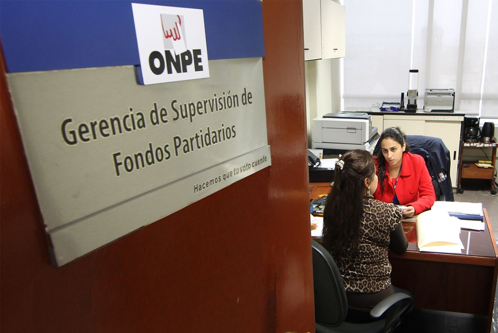
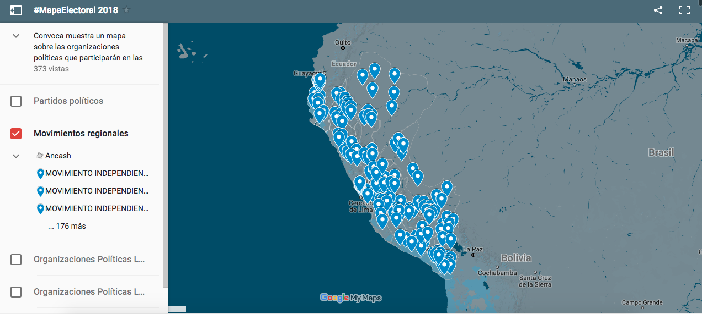
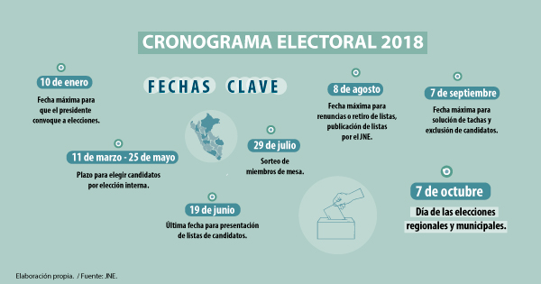
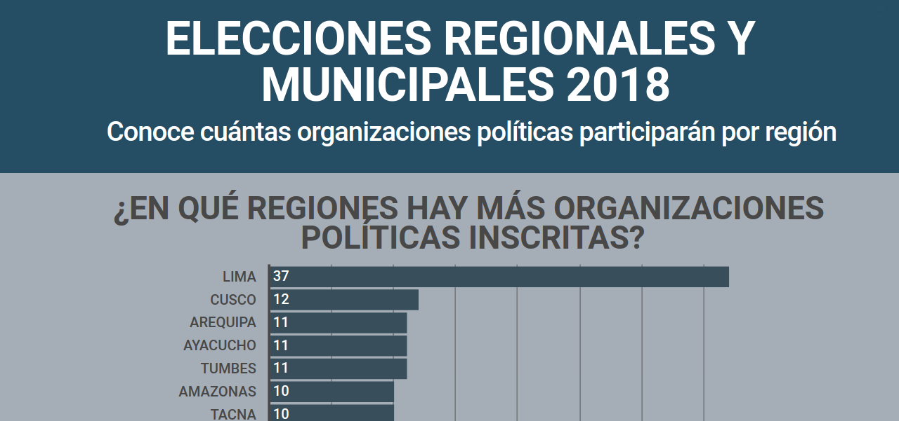

Elecciones 2018: Sin garantías para evitar la corrupción ni sancionarla
La norma establece que las organizaciones políticas reportarán sus gastos de campaña luego de que el Jurado Nacional de Elecciones declare finalizado el proceso electoral, que puede tardar hasta tres meses después del día de los comicios.
Por Raquel Tineo
*Con la colaboración de Camila Alomía
Publicado el 12 de febrero de 2018
El cronograma electoral está avanzando. Las reglas de juego han quedado
establecidas. Las próximas elecciones municipales y regionales en Perú se realizarán
bajo una reforma de la Ley Electoral que no favorece la transparencia. La Oficina
Nacional de Procesos Electorales (ONPE) no podrá solicitar reportes periódicos a los
partidos y organizaciones políticas para que estos informen sobre el origen o
procedencia de los fondos que financian sus campañas.
Según la Ley 30689, que modifica la Ley de Organizaciones Políticas y regula su
financiamiento, ahora los partidos solo podrán reportar sus estados financieros de
campaña electoral en un plazo no mayor de 15 días desde el día siguiente que el
Jurado Nacional de Elecciones (JNE) declare finalizado el proceso electoral. Esto
puede tardar entre dos o tres meses, tal como sucedió en las Elecciones Municipales y
Regionales de 2014, cuando el JNE declaró concluido el 31 de diciembre el proceso
que se había realizado el 5 de octubre. Mientras que en las Elecciones Generales del
10 de abril 2016, el JNE lo declaró concluido el 13 de julio de 2016.
Las próximas elecciones municipales y regionales en Perú se realizarán bajo una reforma de la Ley Electoral que no favorece la transparencia.
La ONPE tiene limitada sus facultades de fiscalización ya que no podrá verificar dichos
aportes durante la campaña electoral, pues recién podrá intervenir finalizado el proceso
electoral y una vez presentados los reportes de cada partido, para lo cual solo tendrá
cuatro meses. En el caso de detectarse alguna irregularidad se podría iniciar un
proceso sancionador administrativo, es decir, imponer una multa dentro de los dos
años desde que se halló la infracción. Durante ese lapso, el candidato puede ganar la
elección e incluso, como su mandato dura cuatro años, puede pasarse el tiempo
ostentando el cargo entre apelaciones e impugnaciones y nunca pagar la multa.
Pero los cambios en la norma electoral tienen también su lado positivo, que se logró
gracias a una campaña impulsada por instituciones de la sociedad civil como la
Asociación Transparencia y medios de comunicación. Estas modificaciones establecen
que están impedidas de realizar aportes las personas que hayan sido condenadas o
que tenga prisión preventiva por narcotráfico, tala ilegal, minería ilegal, trata de
personas, terrorismo o lavado de activos pueda ser aportante de un partido u
organización política.
 Gerardo Távara, secretario general de Transparencia, dijo que la nueva norma es una falta contra el derecho de los ciudadanos a tener información y emitir su voto (Foto: Andina)
Atados de manos
En diálogo con Convoca.pe, el Jefe de Normativa y Regulación de Fondos Partidarios
de la ONPE, Roberto Mostajo, señaló que la misma ley dispone que el Poder Judicial
debe publicar en su portal web el listado de todas estas personas condenadas por
estos delitos que les impide aportar. “La publicación debe salir en las próximas
semanas. Eso debe ser de conocimiento público y es el Poder Judicial quien debe
remitir a todos los bancos la relación de estas personas”, precisó.
“Una vez que nos entreguen la información financiera de campaña nosotros vamos a
hacer una verificación sobre la información o los aportes recibidos por los candidatos
que se encuentren de acuerdo a lo que la ley establece y partir de eso ponemos
sanciones dentro del marco legislativo que se ha establecido. Y la sanción es
básicamente una multa”, anotó.
Según Mostajo, tendrían un plazo de cuatro meses para realizar dicha verificación,
además, si se encontrara alguna irregularidad ellos podrían iniciar un procedimiento y
sancionar dentro de los dos años desde que se cometió la infracción.
Como se advierte, la ONPE no solo está limitada a exigir rendiciones luego de
concluido el proceso, sino que además se le ha reducido el tiempo de ocho a cuatro
meses para realizar la revisión.
Al respecto, el secretario general de Transparencia, Gerardo Távara, comentó a este
medio digital: “Si te pasas los cuatro meses, ‘piña’. Ya no puedes aplicar sanciones”.
“El Congreso retrocedió en el asunto de la reforma electoral (…) Eso yo creo que fue absolutamente intencional”
Gerardo Távara, Transparencia
En las elecciones de 2014, según el portal de la ONPE, por exceso de aportaciones se impuso una multa a Alianza para el Progreso (APP), la cual ascendió a S/ 2’267,440 (Resolución Nº 554-2014- JNE del 2 de julio de 2014). La misma figura se aplicó para Perú Posible con una multa de S/ 171,250, referida a las elecciones de 2011 (R.J. N° 205-2011- J/ONPE del 26 octubre 2011). Convoca.pe pidió a la ONPE la confirmación sobre si estos partidos habían realizado el pago de dichas multas pero hasta el cierre de edición no hubo respuesta.

La Gerencia de Supervisión de Fondos Partidarios de la ONPE dijo a Convoca que los congresistas dan las leyes y a los funcionarios y a la ONPE les corresponde solo cumplir lo que se señala, así, están prácticamente atados de manos. (Foto: ONPE).
Retroceso en el Congreso
Para Gerardo Távara, el Congreso retrocedió en el asunto de la reforma electoral. Es
más, indicó que la excusa que dieron los partidos para no informar durante la campaña
sobre la procedencia de los fondos de financiamiento fue que en esos momentos de
actividades proselitistas las organizaciones políticas estarían muy ocupadas para
dedicarse a realizar sus reportes de cuentas.
“Eso yo creo que fue absolutamente intencional. Los partidos dijeron nosotros en la
campaña estamos muy ocupados, en la campaña no podemos dedicar tiempo a
presentar reportes de cuentas. Entonces, se dijo, el único reporte de cuentas que se va
a presentar será al final de todo el proceso”, refirió. Incluso, la ONPE les ofreció tener
un aplicativo para que vayan rindiendo cuentas desde su oficina, virtualmente y en
tiempo real, los partidos no aceptaron, comentó.
El gerente de Supervisión de Fondos Partidarios (GSFP) de la ONPE, Julberth Medina,
refirió respecto a estos cambios que “las instituciones públicas actúan conforme a lo
que define la ley y esta se define en el marco constitucional por el Congreso de la
República”. Enfatizó que “son los congresistas quienes dan las leyes, a los funcionarios
y a la ONPE le corresponde cumplir lo que la ley señala”.
Asimismo, señaló que en el marco de la modificación y la reforma ellos como institución
hicieron varios planteamientos que finalmente no fueron tomados en cuenta. Agregó
que otros organismos del Estado como el Ministerio Público deberían tomar medidas
penales en el marco de figuras delictivas que se puedan presentar a partir de
denuncias hechas por otras personas.
En caso de que un candidato evidencie un aporte de fuente prohibida, la multa será el
monto equivalente al íntegro del aporte recibido indebidamente (artículo 36, inciso B de
la norma).
Convoca muestra un mapa interactivo sobre las organizaciones políticas que participarán en las próximas elecciones municipales y regionales
Ver mapa

La ONPE aclaró que el candidato presentará su reporte de cuentas de su campaña,
mientras que la organización hará lo propio sobre su agrupación específicamente.
Respecto a esta figura, el artículo 36 de la nueva ley regula que es una infracción grave
cuando las organizaciones políticas reciban aportes de fuente prohibida y la sanción
para una infracción grave es una multa no menor de 31 unidades impositivas tributarias
(UIT), equivalente a S/ 128,650, ni mayor de 60 UIT, que asciende a S/ 249,000.
En referencia a este tema, Távara manifestó que se trata de una falta contra el derecho
de los ciudadanos a tener información y emitir su voto. “La información es una
herramienta para el ejercicio de derechos fundamentales. El voto es un derecho
fundamental. Por eso nosotros hemos dicho, con esa disposición aprobada en el
Congreso y que se ha convertido en ley (…). Eso, por ejemplo, sí hubiéramos querido
que el Ejecutivo lo observe, porque así podía volverse a discutir. Pero el Ejecutivo no lo
observó, lo aprobó”, comentó Távara.
Hasta el 10 de enero se inscribieron 23 Partidos Políticos, 155 Movimientos Regionales, 5 Organizaciones Políticas Provinciales, 22 Organizaciones Políticas Distritales.
Agregó que desde su punto de vista es lo más grave que se ha producido en materia
de reforma electoral. “Esa es una involución, es un retroceso clarísimo en materia de
reforma electoral y lo hemos dicho así en varias oportunidades”, precisó.
En tanto, los días avanzan y los precandidatos empiezan a perfilarse. Precisamente el
viernes 9 de febrero se venció el plazo para que los postulantes a las Elecciones
Regionales y Municipales 2018 presenten ante el JNE sus renuncias a los partidos y
movimientos políticos. Además, desde ese día ya entró en vigencia el nuevo
Reglamento de Financiamiento y Supervisión de Fondos Partidarios, que estableció la
ONPE, tras la modificación de la Ley 30682 sobre las organizaciones políticas.
 El nuevo cronograma electoral aprobado en el marco de la reforma que se aplicará para las Elecciones Regionales y Municipales 2018. (Foto: Transparencia)
En carrera
Távara recordó que en las elecciones 2014 encontraron 1 mil 400 personas candidatos
con condenas judiciales y no estaban impedidos de postular porque la ley se los
permitía. Estos tenían sentencias por narcotráfico, violación, homicidio, hurto y hasta
terrorismo.
Un ejemplo notorio fue Ricardo Chiroque, exalcalde en San Juan de Lurigancho, en
Lima. Estuvo condenado por corrupción cuando fue alcalde y permaneció recluido casi
tres años por el delito de colusión, pero apenas salió de la cárcel empezó su campaña
para volver a ser candidato a la alcaldía de su distrito con Avanza País, el partido del
exlegislador fujimorista Julio Gagó.
“Ese es el típico caso de la persona que no va a poder ser candidato nunca más en su
vida, en virtud de esa ley”, aclaró Távara. Incluso, Álex Kouri, quien está en prisión
desde 2016 por corrupción, no va a poder ser candidato nunca más. A personajes
como éstos si se le confirma la condena no podrán formar parte de la actividad política
nunca más, aseveró.
Cabe señalar que el 10 de enero fue el último día para la inscripción de organizaciones
políticas, hasta esa fecha se inscribieron 23 Partidos Políticos, 155 Movimientos
Regionales,5 Organizaciones Políticas Provinciales, 22 Organizaciones Políticas
Distritales para participar en las Elecciones municipales y regionales 2018.
Tumbes, Puno, Ancash y Cusco son las regiones que siguen en mayor representación
a nivel regional, cuentan con ocho movimientos regionales inscritos. Mientras que
Lambayeque es la región que tiene menos: solo dos movimientos regionales. Sobre
esta región, uno de los Movimientos Regionales es Contigo Lambayeque, cuyo actual
presidente es Virgilio Acuña Peralta, ex congresista de Solidaridad Nacional, hermano
del ex candidato presidencial César Acuña, ha sido investigado por lavado de activos
en 2011.
El 12 de setiembre de 2017 se aprobó la reforma de ley que prohíbe la participación de
las organizaciones políticas locales. No obstante, se aceptaron a las que lograron
inscripción hasta antes del 10 de enero 2018. Los fundamentos que se presentaron
fueron: falta de representación y limitaciones en el ejercicio de su gobierno.
Ver Ranking

Ámbito regional
Según la base de datos de los partidos inscritos hasta la fecha límite, revisada por
Convoca.pe, las regiones con mayor número de movimientos regionales son
Amazonas, Tacna, Arequipa, Ayacucho con diez cada una. Solo diez regiones
alcanzaron a inscribir organizaciones políticas distritales, entre ellas, Lima con siete y
Cusco con ocho, siendo las regiones más representadas a nivel distrital.
Además, dos de las cinco organizaciones políticas locales provinciales inscritas
pertenecen a Lima, las demás son de Apurímac, Loreto y Piura.
De las 205 organizaciones políticas inscritas, 26 no tienen personeros legales titulares
(la mayoría son movimientos regionales, tres son partidos políticos). Ocho
organizaciones políticas no cuentan con personeros legales ni alternos ni titulares hasta
el momento (un partido político, siete movimientos regionales) .